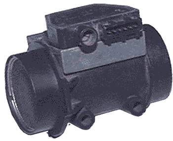

главная → ЭСУД ГАЗ
Датчик массового расхода воздуха HLM2-4.7 0280212022 (BOSCH)
Назначение датчика. Принцип действия
- Датчик массового расхода воздуха предназначен для преобразования расхода воздуха, поступающего в двигатель, в напряжение постоянного тока. Информация датчика позволяет определить режим работы двигателя и рассчитать цикловое наполнение цилиндров воздухом на установившихся режимах работы двигателя, длительность которых превышает 0,1 секунды.
- Чувствительный элемент датчика построен на приципе терморезистивного анемометра и выполнен в виде платиновой нагреваемой нити. Нить нагревается электрическим током, а с помощью термодатчика и схемы управления датчика ее температура измеряется и поддерживается постоянной.
- Если через датчик поток воздуха увеличивается, то платиновая нить начинает охлаждаться, схема управления датчика увеличивает ток нагрева нити, пока температура ее не восстанавливается до первоначального уровня, таким образом величина тока нагрева нити пропорциональна расходу воздуха. Вторичный преобразователь датчика преобразует ток нагрева нити в выходное напряжение постоянного тока.
- С течением времени нить загрязняется, что приводит к смещению градуировочной характеристики датчика. Для очистки нити от грязи после выключения двигателя (при выполнении определенных условий) нить прожигается до 900—1000°C импульсом тока в течении 1 секунды. Формирует импульс управления прожигом блок управления.
Конструкция датчика

- Датчик имеет пластмассовый корпус, выполненный в виде патрубка с проходным сечением 60 мм в диаметре, на концах патрубка установлены защитные решетки. В трубе корпуса размещен чувствительный элемент датчика (платиновая нить) и терморезистор.
- В верхней части датчика размещены:
- плата вторичного преобразователя, закрытая герметичным пластмассовым корпусом, шестиконтактная вилка соединителя;
- потенциометр регулировки CO на холостом ходу.
Параметры датчика
- Напряжение электропитания: 8...16В
- Ток потребления: не более 1,0А
- Диапазон измеряемого расхода воздуха: 0...500кГ/ч
- Сопротивление между выводами 3—2 (выход): 2,9...3,5Ом
- Сопротивление между выводами 4—1 (прожиг): 20...25кОм
- Сопротивление между выводами 6—1 (регулятор CO): 0...1,0кОм
- При включенном зажигании на выходе датчика (3—2) должно быть напряжение 1,4±0,04 В.
- Сопротивление потенциометра регулировки CO обычно устанавливается в среднее положение 0,45...0,55 кОм, один полный обоpот винта примерно pавен 0,035 кОм, увеличение сопpотивления достигается путем вpащения винта по часовой стpелке, уменьшение—пpотив часовой.
- Датчик имеет нелинейную зависимость выходного напряжения от массового расхода воздуха:
- 15 кГ/ч: 2,3323...2,3599 В
- 30 кГ/ч: 2,6240...2,6572 В
- 60 кГ/ч: 2,9800...3,0214 В
- 120 кГ/ч: 3,4208...3,4820 В
- 280 кГ/ч: 4,1977...4,2711 В
- 480 кГ/ч: 4,7089...4,7857 В
- Чувствительность датчика меняется от 30 мВ/(кГ/ч) в начале характеристики до 3 мВ/(кГ/ч) в конце характеристики.
Установка и монтаж датчика на автомобиле
- Датчик массового расхода воздуха размещается под капотом автомобиля. Датчик крепится с одной стороны к дроссельному устройству, а с другой—к воздушному фильтру, с помощью резиновых патрубков и хомутов.
- При установке датчика нужно соблюдать его ориентацию:
- стрелка, изображенная на корпусе датчика, должна совпадать с направлением воздушного потока к двигателю;
- ориентация датчика вокруг вертикальной оси должна быть строго фиксирована и совпадать с положением датчика, определенным документацией завода-изготовителя.
- Подключение датчика к жгуту производится с помощью шестиконтактного соединителя с защелкой.
- После установки (замены) датчика расхода воздуха необходимо выполнить регулировку двигателя по CO на холостом ходу.
Аналоги датчика
Аналогом датчика HLM2-4.7 0280212022 является датчик ДМРВ-М ИВКШ.407282003 производства ОАО «АПЗ» г. Арзамас.
Внешние проявления неисправностей цепей датчика

- Повышенные обороты холостого хода (1800±300 об/мин). Лампа неисправности горит при работающем двигателе. Самодиагностика блока фиксирует коды неисправности 13 или 14.
- Проверьте исправность цепей 6 и 7.
- Не регулируется концентрация CO на холостом ходу. Лампа неисправности горит при включении зажигания. Самодиагностика блока фиксирует коды неисправности 31 или 32.
- Проверьте исправность цепи 36 (потенциометр CO).
- Двигатель запускается и глохнет. При частично открытой дроссельной заслонке и оборотах двигателя, близких к минимальным. Расход воздуха менее 10 кГ/ч. Лампа неисправности не горит при работающем двигателе.
- Замените датчик расхода воздуха.
- Повышенный эксплуатационный расход топлива. Лампа неисправности не горит при работающем двигателе.
- проверьте и восстановите исправность цепи 31 (прожиг нити);
- проверьте и замените датчик расхода воздуха.
|